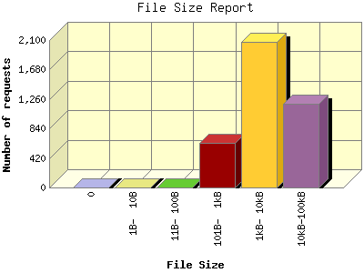

The File Size Report categorizes the size of the file being requested. This can be useful in optimizing site performance. (Remember that on a 28.8Kps modem, it will take on average of 40 seconds to download 100Kb of data.)

| File Size | Number of requests | Percentage of the bytes | |
|---|---|---|---|
| 1. | 0 | 0 | 0.00% |
| 2. | 1B- 10B | 0 | 0.00% |
| 3. | 11B- 100B | 0 | 0.00% |
| 4. | 101B- 1kB | 633 | 0.24% |
| 5. | 1kB- 10kB | 2,072 | 18.68% |
| 6. | 10kB-100kB | 1,192 | 81.08% |
This report was generated on January 28, 2013 20:38.
Report time frame December 30, 2012 00:02 to January 28, 2013 22:40.
| Web statistics report produced by: analog 5.30 / Report Magic 2.15 |